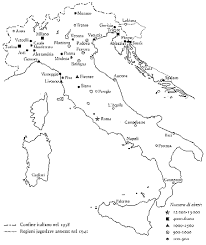

La legislazione antisemita in Germania e in Italia
L'antisemitismo, presente nella Storia da molti secoli, si concretizza nel corso degli anni'30 in Germania e in Italia attraverso una serie di leggi e di provvedimenti che tolgono progressivamente libertà , spazio e identità agli ebrei, smaterializzandone l'esistenza e avviandoli verso l'annientamento.
LA DISTRIBUZIONE DEGLI EBREI IN GERMANIA NEL 1933
Una buona parte dei Giudei erano concentrati in campi come giornalismo, avvocatura, medicina e vendita al dettaglio mentre un numero più ampio era composto da quelli che vivevano in condizioni umili, lavorando come operai, artigiani e venditori ambulanti. Poiché bisognava limitare l’ascesa dei semiti, venne vietato l’esercizio della professione ai giudei e vennero costretti a svolgere attività professionali che il popolo snobbava. Il dato preoccupante però era che la maggior parte degli ebrei era in Europa; in Germania si stimava che vi fossero circa 523 000 residenti e l’80 % di questi possedeva la cittadinanza tedesca. La maggior concentrazione di cittadini semiti era situata nella capitale (circa 160 000). Durante quel periodo il 70 per cento circa degli ebrei tedeschi viveva in aree urbane risiedendo nelle 10 maggiori città tedesche; le principali città dove risiedevano erano in ordine di numero di risiedenti: Berlino, Francoforte sul Meno, Breslau, Amburgo, Colonia, Hannover e Lipsia. Quando prese il potere il partito Nazista il numero di Semiti presenti in Germania diminuì dello 0,75 per cento.
Distribuzione degli ebrei in Germania-Austria-Cecoslovacchia nel 1933.
LA LEGISLAZIONE ANTI-EBRAICA IN GERMANIA
Nel 1935 il partito nazista emanò due leggi durante l'annuale conferenza di Norimberga (da cui trae il nome di leggi di Norimberga) che diedero il via all'antisemitismo nel territorio tedesco.
Schema delle leggi di Norimberga che indicava chi poteva sposarsi, chi veniva ritenuto mezzosangue, Ebreo o Tedesco. Punti neri: ebrei, punti bianchi: tedeschi, punti tagliati: mezzosangue.
Questi non furono i primi segni di discriminazione che si notarono già nel '33 quando il partito era già salito al potere. Fin dal suo insediamento, Hitler fece promulgare una serie di leggi volte a creare uno "stato di eccezione", sospendeva gli articoli della costituzione di Weimar riguardanti le libertà personali. In questo modo permise l'eliminazione fisica non solo degli avversari politici, ma di intere categorie di cittadini che per qualche ragione risultavano non integrabili in un sistema politico. Si iniziò con distinguere i nomi ebrei da quelli tedeschi cosi "tutte le donne diventarono di secondo nome Sara e tutti gli uomini Israele, proseguendo con leggi come Legge per la Restaurazione del Servizio Civile con quale avviene l'inizio dell'esclusione degli ebrei e tutti i non ariani dalla società e la privazione dei posti di lavoro.
Negozio ebraico devastato dopo la notte dei cristalli, 9 novembre 1938, 1500 ebrei assassinati, sinagoga e negozi distrutti, libri bruciati, 30000 ebrei deportati. Immagine e notizie da La Repubblica 9/11/2013 pagina 14.
Gli ebrei subirono gli effetti di più di 400 tra decreti che limitavano in tutti gli aspetti le loro vite, sia in campo pubblico che privato. Molte di quelle leggi erano state emanate dall'amministrazione statale ed erano valide in tutto il territorio nazionale, colpendo così tutti gli ebrei. Oltre ai simboli, la stella gialla cucita sugli abiti, ci furono leggi che obbligavano gli ebrei a dichiarare ogni possesso materiale e a denunciare i propri beni e restrizioni che impedivano loro di camminare sui marciapiedi, di accedere ai parchi o di accedere alle strutture pubbliche.
Foto di omosessuali con gli iconici pigiami a righe nei campi di concentramento.
Le due leggi di Norimberga, nello specifico, eliminavano la cittadinanza dalle persone non ariane e impedivano i matrimoni misti tra Tedeschi ed ebrei così le famiglie non sarebbero state "infettate". Con
altre norme ausiliari gli ebrei furono privati del diritto di voto, così da non poter partecipare alle elezioni, e di ricoprire incarichi di pubblica amministrazione. Iniziarono a non accettare malati in
ospedale, ufficiali ebrei espulsi dall'esercito, ed ebrei che non potevano più sostenere esami di dottorato. Si stabilì inoltre che chi aveva gli ultimi quattro nonni nati in Germania era ariano mentre
chi ce ne aveva ebrei o aveva un misto dei due sarebbe stato un non ariano.
Le Leggi di Norimberga del 1935 furono solo il preambolo a una nuova ondata di provvedimenti antisemiti che ebbero come conseguenza l'immediata segregazione fisica degli ebrei: a Düsseldorf, per esempio,
i malati non vennero più ammessi negli ospedali pubblici, mentre i tribunali tedeschi non poterono più citare opinioni o studi legali scritti da ebrei. La parola Shoah non indica solamente gli ebrei, ma
una quantità di persone ritenute diverse dal "normale". Oltre agli ebrei, i più bersagliati furono i Rom e gli zingari. Più di mezzo milione fu ucciso, e non solo nella Germania nazista, ma anche negli
stati collaborazionisti. Inoltre anche i testimoni di Geova e i Pentecostali furono perseguitati, ma a loro fu data una possibilità : rinunciare al loro credo per la libertà . Per le persone di carnagione
mulatta non c'era un vero e proprio programma di sterminio di massa, ma questo non impedì alla Germania nazista di sottoporli alle peggiori torture. Tra il 1933 e il 1945 circa centomila uomini furono
arrestati in quanto omosessuali e transessuali; venivano costretti ad indossare la divisa con il triangolo rosa in modo da essere immediatamente riconoscibili e condotti in custodia preventiva dove
spesso venivano sottoposti a torture ed esperimenti scientifici.
Uno dei protagonisti degli orrori che avvenivano nei campi di concentramento, fu Mengele, un dottore nazista che utilizzava bambini, in particolare i gemelli, come cavie umane per i suoi studi medici.
Il pensiero che ha guidato questo gruppo così vasto di persone ad aggregarsi alle idee fondamentaliste del partito nazista viene racchiuso nella sua interezza nel "Mein Kampf", un'autobiografia scritta
da Hitler nel suo periodo di prigionia. Quest'opera fornisce una giustificazione al suo credo politico e delinea nel dettaglio il programma del partito nazista.
Coppia di sposi ariano-ebraica esposta alla pubblica vergogna, 1939.
L'INIZIO DELLA QUESTIONE RAZZIALE IN ITALIA
Il fascismo iniziò ad occuparsi della questione razziale dopo la conquista dell'Etiopia del 1936-37. Si profilò, allora, la necessità di stabilire una politica di separazione tra conquistatori e nuovi sudditi che confluì nel Decreto Legislativo del 19 aprile 1937, convertito in legge il 30 dicembre 1937, che puniva con la reclusione da 1 a 5 anni le relazioni di indole coniugale tra italiani e indigeni. Questo provvedimento sarebbe stato completato da altre norme restrittive riguardanti i matrimoni misti (17 novembre 1938), dalla Legge del 29 giugno 1939 che istituì il reato di lesione al prestigio della razza con la quale si considerava reato il fatto che un italiano lavorasse per un indigeno e, infine, da quella del 13 maggio 1940 che negava la piena cittadinanza ai meticci anche se nati da un genitore italiano. Già nel 1938 Mussolini si era reso conto che i provvedimenti emanati avevano bisogno di una cornice teorica e di una base scientifica, pertanto incaricò il giovane antropologo Guido Landra di stendere una specie di decalogo del razzismo fascista che venne pubblicato nel luglio 1938 sul Giornale d'Italia con il titolo "Il fascismo e i problemi della razza", noto anche come "Manifesto degli scienziati razzisti" e pubblicato nell'agosto 1938 sulla rivista "La difesa della razza". Queste fasi costituiscono il preambolo alla pubblicazione delle leggi razziali antisemite in Italia, la cui genesi appare, tuttavia, abbastanza incerta e complessa.
LE CAUSE DELLA SVOLTA ANTISEMITA DI MUSSOLINI
Vignetta pubblicata nella rivista La Difesa Della Razza, 1938.
Molti storici concordano nel dire che i provvedimenti presi da Mussolini nei confronti degli ebrei non furono una politica di allineamento dell'Italia al Reich, probabilmente sono legati alla condivisione di un'idea di razzismo biologico che il regime andava assumendo come parte fondante della propria ideologia. Sicuramente alla legislazione anti-semita contribuì il fatto che le comunità ebraiche italiane si mantenevano autonome e difficilmente controllabili dal regime, quindi sfuggivano all'idea di totalitarismo che il fascismo voleva creare e imporre. In quei mesi venne utilizzata tutta la stampa legale italiana per la pubblicazione di articoli diffamatori e infamanti verso gli ebrei, in modo da preparare l'opinione pubblica. L'applicazione delle leggi e la diffusione della propaganda anti-ebraica di quel periodo causarono una crescente perdita dei diritti da parte dei cittadini italiani di origine e/o di religione ebraica, anche se il fascismo durante il periodo successivo all'emanazione delle leggi razziali cercò di distinguersi dal nazismo. Mussolini stesso disse: "Discriminare, ma non perseguitare", seguendo una logica che tentava di differenziarsi dal nazional-socialismo e nel contempo di dare all'Italia un'identità di potenza superiore ed elitaria.
LA DISTRIBUZIONE DEGLI EBREI IN ITALIA AL CENSIMENTO DEL 1938

Nel 1938 furono emanate le leggi razziali, ma antecedentemente a quella data in Italia gli ebrei ricoprivano anche alcune delle più importanti cariche: sei senatori erano ebrei e, successivamente, si arrivò ad averne diciassette, mentre 50 generali erano stati ebrei durante il primo conflitto mondiale. All'inizio del XX secolo, Alessandro Fortis era stato il primo ebreo a diventare Presidente del Consiglio del Regno d'Italia e tre il 1910 e il 1911 Luigi Luzzatti, anche lui ebreo, era stato nominato primo ministro. Gli ebrei quindi erano accettati e bene integrati nella società italiana e partecipavano alla vita politica del Regno. Molti di loro erano benestante, dato importante visto che la società ebraica sostenne la nascita e la presa del potere del fascismo, infatti risulta che 230 ebrei abbiano partecipato alla marcia su Roma e un esponente importante dell'ebraismo, Aldo Finzi (che verrà ucciso alle Fosse Ardeatine nel marzo 1944) sarà membro del Gran Consiglio del Fascismo. Ciò non significa che gli ebrei italiani avessero sposato la causa del fascismo, poiché esistevano anche nuclei di forte resistenza all'ideologia fascista. Dopo il conferimento dell'incarico di Capo del Governo, Mussolini durante i suoi discorsi esprime opinioni distanti dall'antisemitismo e tese a rassicurare gli ebrei italiani e la questione ebraica iniziò a profilarsi nel corso degli anni '30.
Nell'agosto dello stesso anno venne effettuato un censimento al fine di individuare, contare e schedare gli ebrei residenti in Italia che risultarono essere 46.656, ovvero l'1,1 per mille della popolazione, residenti soprattutto al Centro-Nord, con concentrazioni significative a Roma (11.000), Milano (7.000), Trieste (5.000).
PROVVEDIMENTI ANTIEBRAICI IN ITALIA
Il Decreto Legge del 5 settembre 1938, chiamato Provvedimenti per la difesa della razza, e firmato dal ministro Bottai, stabilì l'esclusione con effetto immediato dei docenti ebrei dalla scuola statale; dalle università vennero espulsi 96 docenti e si prevedeva inoltre il divieto di iscrizione degli alunni ebrei alle stesse scuole degli alunni di razza ariana. Il 23 settembre un successivi decreto stabilì la costituzione di sezioni speciali per bambini ebrei nelle scuole elementari dello stato e la possibilità per le comunità ebraiche di aprire proprie istituzioni scolastiche. Un decreto del 7 settembre aveva revocato la cittadinanza, concessa dopo il gennaio 1919, ad ebrei stranieri che dovettero lasciare il territorio nazionale entro sei mesi. Il 6 ottobre un Provvedimento del Gran Consiglio del Fascismo varò il divieto per gli ebrei di sposare una persona di razza ariana, di lavorare in istituzioni pubbliche, di appartenere al partito fascista, di prestare servizio nell'esercito, di possedere o dirigere aziende con più di cento dipendenti, di possedere terreni di più di 50 ettari, di avere al proprio servizio personale ariano. Il 17 novembre 1938 la proibizione di matrimonio tra ariani e persone appartenenti ad altre razze divenne Decreto Legge. Le città cominciarono ad essere tappezzate di volantini e manifesti e sui giornali come nella rivista "La difesa della Razza" nel novembre del 1938 comparvero delle vignette con illustrato quello che gli ebrei non potevano fare e luoghi non dovevano frequentare gli ebrei. "Gli ebrei non possono... prestare servizio militare, essere proprietari di terreni o di fabbricati, avere domestici ariani...".
Immagine tratta dalla mostra “1938-1945, la persecuzione degli ebrei in Italia, documenti per la Storia�, a cura dell’associazione Casa della Memoria e della Storia di Roma, promossa dall’Assessorato alle Politiche Culturali di Roma, 27 gennaio-10 febbraio 2012.
GLI ESITI DEI PROVVEDIMENTI LEGISLATIVI
Immagine tratta dalla mostra del febbraio 2016 : “ Gli ebrei a Milano – Le leggi razziali razziali nei documenti dell’Archivio di Stato di Milano�.
LIMITAZIONI Dopo i provvedimenti del 1938 gli ebrei italiani furono colpiti da una molteplicità di provvedimenti amministrativi che limitarono la loro esistenza. Molti di essi emigrarono: 6.000 tra il 1938 e il 1943. Tra le attività vietate: fotografi, commercianti di preziosi, venditori di oggetti di cartoleria, di libri, di giochi per bambini; a loro era vietato affiggere annunci mortuari, inserire il nome negli elenchi telefonici, possedere una radio e in seguito l'automobile, essere iscritti a circoli sportivi e ricreativi.
INTERNAMENTO La normativa in fatto di Legge sulla Pubblica Sicurezza prevedeva già dal 1930, con rafforzamento nel 1935, alcuni provvedimenti legislativi avviati dal Ministero della Guerra atti all'individuazione, isolamento, internamento dei soggetti ritenuti pericolosi o nemici della sicurezza dello Stato, concetto che fu ribadito con una circolare dell'8 giugno 1940, alla viglia dell'ingresso in guerra dell'Italia. Fu istituito presso il Ministero degli interni un apposito "Ufficio internati", diviso in due sezioni: stranieri e italiani. Già un mese prima di tale Decreto, le Prefetture erano state raggiunte dall'ordine di fornire gli elenchi degli ebrei residenti in Italia da internare, specificando che la razza non costituiva, comunque, elemento sufficiente per l'internamento. Tuttavia, poiché la legislazione anti-ebraica aveva previsto l'espulsione per gli ebrei stranieri, il 15 giugno 1940 si varò un ordine di arresto per tutti gli ebrei stranieri, arrivati in Italia dopo il 1919, che fossero rimasti sul territorio italiano. Dopo l'arresto le persone venivano destinate ai campi di internamento o ai luoghi di con fino destinati agli antifascisti. In Italia tra il 1940-1943 vi erano più di 50 campi di internamento, gestiti dal Ministero dell'Interno. Molti di questi campi erano nel Centro- Nord, dove agli internati ebrei stranieri si aggiunsero sloveni e croati deportati dopo l’occupazione dell’Italia delle zone balcaniche.
Campo di internamento di Fossoli (provincia di Modena).
DEPORTAZIONI Il 10 luglio 1943 fu destituito Mussolini e l'Italia si vede divisa in due parti: le regioni meridionali controllate dagli alleati e dal regno d'Italia mentre l'Italia centrale e settentrionale sotto il dominio del Terzo Reich e della Repubblica Sociale Italiana costituita a Salò, sul lago di Garda da Mussolini. Questi eventi politici segnarono una svolta nella storia degli ebrei italiani poiché la presenza dei nazisti in Italia segnò l'inizio delle persecuzioni e delle deportazioni. La deportazione degli ebrei in Italia permette di avere dati aggiornati: gli ebrei arrestati e deportati nel nostro Paese furono 7579; gli arrestati e morti in Italia 322; gli arrestati e scampati 451. Tolti quelli morti in Italia, gli uccisi nella Shoah sono 5791 e di 950 persone mancano notizie attendibili per difficoltà di classificazione. Tra gli episodi più significativi la retata della Gestapo al ghetto ebraico di Roma. È il 16 ottobre del 1943, il "sabato nero" del ghetto di Roma. Alle 5.15 del mattino le SS invadono le strade del Portico d'Ottavia e rastrellano 1024 persone, tra cui oltre 200 bambini. Due giorni dopo, alle 14.05 del 18 ottobre, diciotto vagoni piombati partiranno dalla stazione Tiburtina. Dopo sei giorni arriveranno al campo di concentramento di Auschwitz in territorio polacco. Solo quindici uomini e una donna (Settimia Spizzichino) ritorneranno a casa dalla Polonia. Nessuno dei duecento bambini è mai tornato. Si arrivò ad un primo punto fermo il 14 novembre 1943 a Verona quando l'assemblea del neo partito fascista approvò un manifesto programmatico in cui il punto 7 stabiliva: "Gli appartenenti alla razza ebraica sono stranieri. Durante questa guerra appartengono a nazionalità nemica". Poco dopo tutti gli ebrei vennero arrestati e internati in campi di concentramento principali, in attesa di campi appositamente attrezzati. Seguì la deportazione degli ebrei da parte dei tedeschi nel campo di Auschwitz con convogli diretti dove la maggior parte delle persone veniva "selezionata" per poi essere uccisa nelle camere a gas mentre una parte minore veniva immatricolata, immessa sul campo, assegnata ad un lavoro e portata alla morte per malattia, denutrimento o uccisioni per altre motivazioni. In tutta Italia vennero deportati tra il 1943 e il 1945 oltre 8500 ebrei. Di questi ne torneranno poche centinaia. Nonostante le leggi razziali e la politica antiebraica adottata da Mussolini, gli italiani non si dimostrarono antisemiti infatti le altre 29.000 persone classificate di "razza ebraica" vissero in clandestinità fino alla Liberazione protette da non ebrei denominati oggi "giusti".
Immagini del rastrellamento nel ghetto di Roma, 1943.
FONTI
www.ushmm.org
Storia XX secolo, "Le leggi di Norimberga"
www.repubblica.it/cronaca/2012/01/26/news/olocausti-28828016/
www.rainews.it/dl/rainews/articoli/giorno-memoria-porrajmos-omocausto-olocausto-a97dad1b-c8bb-4ffe-ba83-314e88ef5ac5.html
it.wikipedia.org/wiki/Mein_Kampf
www.google.it/amp/it.blastingnews.com/cronaca/2016/01/giornata-della-memoria-2016-perche-si-celebra-il-27-gennaio-e-significato-shoah-00754987.amp.html
F. M. Feltri, M.M. Bertazzoni, F. Neri, La Torre e il Pedone, vol.3, Sei editore, Torino
www.deportati.it, www.museodiffusotorino.it
Rivista "La difesa della Razza", agosto 1938
R. De Felice, Storia degli ebrei Italiani sotto il fascismo, Einaudi 1993
books.google.it/books?isbn=8814146470
www.demographics.it/public/file_23_1_2011.pdf
www.storiaxxisecolo.it/fascismo/fascismo18.htm
www.archivio.pubblica.istruzione.it
Michele Sarfatti, Gli ebrei nell'Italia fascista. Vicende, identità , persecuzione, 2° ed., Einaudi, Torino 2007
www.governo.it/Presidenza/DICA/beni_ebraici/index.html Klaus Voigt
www.museoshoah.it (mostra digitale sulla persecuzione antiebraica in Italia)
Liliana Picciotto, Il libro della memoria. Gli ebrei deportati dall’Italia (1943-1945)
www.eclettico.org/israele/urbis/campi
www.archivio.pubblica.istruzione.it
www.cdec.it/home2.asp?idtesto=594
www.16ottobre1943.it
www.storiaxxisecolo.it/deportazione/deportazionegiusti.htm